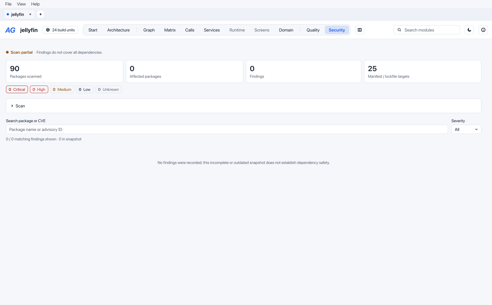

Qualität und Lieferkette
Verbinde Quellmetriken, externe Berichte, ein Offline-Inventar und ausdrücklich gestartete Advisory-Scans.
Belege aus einem echten Werkzeuglauf importieren
Erzeuge Berichte zuerst mit deinen Test- oder Analysewerkzeugen. Die Pfade unten sind Beispiele. --source-root brauchst du nur, wenn es Berichtspfade passend auf dein Projekt abbildet.
archguard metrics . --extended
archguard coverage . --report coverage.xml --source-root src
archguard quality . --report findings.sarif --source-root src
archguard test-evidence . --report junit.xml
archguard mutations . --report mutation-report.json --source-root src
archguard duplicates . --report cpd.xml --source-root srcCoverage liest JaCoCo, Cobertura, Clover oder LCOV; Qualitätsbefunde verwenden SARIF 2.1.0; Tests JUnit XML; Mutationen mutation-testing-elements JSON; Duplikatberichte CPD XML. Die Importbefehle lesen ohne --report gespeicherte Evidenz und starten nicht deren Erzeuger. metrics --extended berechnet aktuelle Quellmetriken.
Duplikate scannen und geänderten Code prüfen
archguard duplicates . --scan --min-tokens 100
archguard quality . --base main --min-changed-coverage 80 --max-complexity 15 --max-nesting 4Der eingebaute Duplikatscan führt ausdrücklich eine Analyse aus. Ohne --replace ersetzt er keinen importierten CPD-Bericht. Die Grenzwerte für geänderten Code sind Policy-Beispiele; importiere zuvor passende Coverage. Unbekannte Messwerte werden nicht null. Statische Testempfehlungen beweisen nicht, dass andere Tests sicher entfallen können.
Ein Offline-Abhängigkeitsinventar erstellen
archguard sbom . --format cyclonedx > sbom.cdx.json
archguard sbom . --format jsonDas CycloneDX-1.6-Inventar nutzt lokale Manifeste und Lockfiles. Es fragt weder Registries noch eine Advisory-Datenbank ab. Unbekannte Versionen und Lizenzen bleiben unbekannt; eigene Workspace-/Pfadreferenzen werden ausgeschlossen.
[licenses]
allow = ["MIT", "Apache-2.0", "BSD-3-Clause"]
deny = ["GPL-3.0-only"]
unknown = "allow"Diese Beispiel-Policy gehört in .archguard/archguard.toml. archguard check . prüft sie; der SBOM-Export selbst schlägt nicht an der Policy fehl. Entscheide ausdrücklich über unbekannte Lizenzen. Die genauen SPDX-IDs sind relevant.
Einen Advisory-Scan starten oder lesen
archguard security .
archguard security . --cached
archguard security . --offline
archguard security . --cached --fail-on-foundDer erste Befehl startet installiertes Trivy und speichert Ergebnisse. Cached-Modus liest nur gespeicherte Evidenz. Offline-Modus startet weiterhin Trivy mit vorhandener lokaler Datenbank und ist nicht mit Cached-Modus kombinierbar. --fail-on-found liefert Exitcode 1 bei Advisories und 3 bei fehlender, veralteter oder unvollständiger Evidenz.

Jellyfin · Partieller Abhängigkeits-Scan; 0 Funde im erfassten Umfang
Vor einer Freigabe die Abdeckung prüfen
Halte Quellrevision, Erzeuger, Scan-Zeitpunkt, zugeordnete Pfade und ausgelassenen Umfang fest. Ein partieller Scan mit null Funden beweist keine vollständige Schwachstellenfreiheit. Erhalte die Herkunft der Berichte beim Teilen und beim Vergleich von Revisionen.
CI-Gates setzen Regeln durch; Sprachen und Metriken erklärt die Messwertverfügbarkeit. MCP stellt die entsprechenden Qualitäts-, Coverage-, Testauswirkungs-, Mutations-, Duplikat-, SBOM- und Sicherheitsbelege bereit.